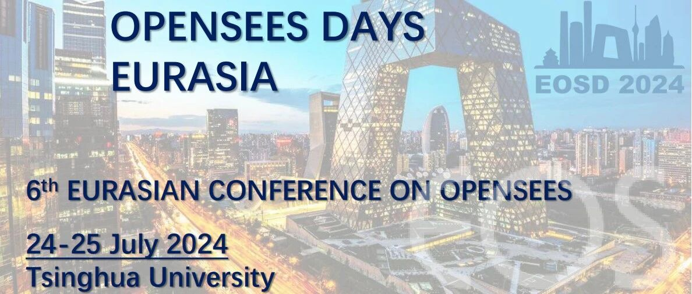

OpenSees培训课程顺利开班，7月24-25日OpenSees会议积极报名中

7月22-23日 OpenSees 培训课程
7月22日，由来自中国、意大利等多所知名高校专家学者讲授的OpenSees培训课程顺利开班。此次培训为期2天，吸引了国内外百余名优秀学子参与，授课与讨论氛围热烈。

C. Demartino教授授课

F. Di Trapani教授授课


线上线下授课与讨论氛围热烈
7月24-25日OpenSees 会议
与此同时，第六届Eurasian Conference on OpenSees （EOSD 2024）会议正在积极报名中。本次会议将汇聚诸多学者和技术人员，共同交流探讨OpenSees相关的理论进步、技术发展与工程应用。我们诚挚邀请各界同仁报名参与，共同为地震工程领域的发展贡献智慧和力量！
会议简介
★ OpenSees（Open System for Earthquake Engineering Simulation）是由太平洋地震工程中心（PEER）创建的一个面向对象的开源软件框架，主要用于模拟结构和岩土系统在地震作用下的响应。OpenSees已被广泛应用于相关研究和实际工程中。
★ 自2006年以来，OpenSees Days在世界各地定期开展活动，包括美国加州UC伯克利的OpenSees Days 2012、意大利萨莱尔诺大学举办的OpenSees Days 2015、葡萄牙波尔图大学举办的欧洲OpenSees Days 2017、香港理工大学举办的欧亚OpenSees Days 2019，意大利都灵理工大学举办欧亚OpenSees Days 2022。2024年，欧亚OpenSees Days 2024将在中国北京举办。
★ 会议主要包括地震工程及其相关延伸领域的研究主题，如结构健康监测（SHM）、结构的参数化设计、岩土工程抗震以及土-结构相互作用研究等。会议旨在帮助不同领域的研究人员交流OpenSees使用和开发经验，共同促进有关OpenSees的前沿研究和思想碰撞。
欢迎通过会议官网报名参加本次会议，同时会议也接受现场报名和缴费。
https://openseesdays2024.civil.tsinghua.edu.cn/
会议日程
★ 会议地址：
会议将于北京西郊宾馆举行，具体位置为北京市海淀区王庄路18号

★ 日程概览：


★ 详细日程安排：
地点：银杏大厅

地点：第一会议室

地点：第六会议室

地点：第一会议室

地点：第六会议室

★ 会议参观：
7月25日下午14:00-17:30：参观北京建筑大学大型多功能振动台阵实验室，扫描以下二维码或访问以下链接填写信息，请在7月22日前登记，未登记代表将无法入校参观
链接：https://buildingstructure.mike-x.com/ZMFgh

参观实验室登记二维码

2024 OpenSees Days
重要时间节点
全文提交(可选)：2024年10月1日
会议时间：2024年7月24-25日
论文全文提交截止日期为2024年10月1日，被接收的论文将发表在Lecture Notes in Civil Engineering (Springer) ，并索引于Elsevier SCOPUS。
2024 OpenSees Days
会议费用
会议费用
线下出席(专家): € 380/ ¥ 3000
线下出席(学生): € 250/ ¥ 2000
线上出席: € 150/￥1150
费用包括：出席会议，并包含茶歇、午餐和社交晚宴，以及一年ASDEA Scientific ToolKit for OpenSees (STKO)免费学术许可证。
注：本次会议接受现场缴费注册
2024 OpenSees Days
学术委员会
Giorgio Monti, Filip Filippou, Frank McKenna, Fabio Di Trapani , Giuseppe Quaranta, Enrico Spacone, José Miguel Castro, Xavier Romão, Asif Usmani, Humberto Varum, Joel Conte, Kazuhiko Kasai, Cristoforo Demartino, Christos Zeris, Dimitrios Lignos, Fabrizio Mollaioli, Massimo Petracca, Liming Jiang, Lizhong Jiang, Zhongguo Guan, Rui Wang, Longhe Xu, Zhaodong Xu.
2024 OpenSees Days
组委会
Xinzheng Lu, Fabio Di Trapani, Cristoforo Demartino, Giorgio Monti, Antonio Sberna, Linlin Xie, Kaiqi Lin, Yuan Tian, Donglian Gu, Yongjia Xu, Bin Wang.
2024 OpenSees Days
Keynote

Anastasios Sextos
Professor
University of Bristol

Sashi Kunnath
Professor
University of California

Zhaodong Xu
Professor
Southeast University, China

Giuseppe Marano
Distinguished Professor
Politecnico di Torino

Guido Camata
Professor
University of Chieti-Pescara
Techmical director of ASDEA

Liming Jiang
Associate Researcher
Hong Kong Polytechnic University, HongKong, China
2024 OpenSees Days
会务组联系方式
官方网站：
https://openseesdays2024.civil.tsinghua.edu.cn/
End